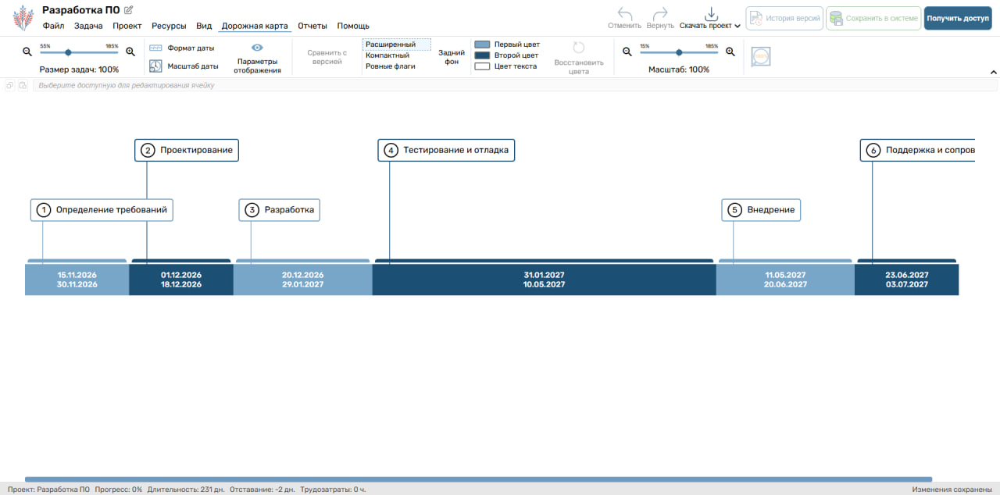

SaaS-система управления проектами
Присоединился к инвестиционному проекту на этапе активной разработки. Продукт — аналог MS Project для управления проектами и задачами команд. Провёл анализ текущего состояния продукта и требований, сформулировал требования к новому функционалу на основе сравнения конкурентных решений, спроектировал логику работы модулей, создал интерактивные прототипы интерфейса и поставил задачи команде разработки.
Отдельно занимался документацией: за время проекта полностью обновил руководство оператора и базу знаний. После успешного запуска пилотной версии готовил презентационные и маркетинговые материалы. Проект был приостановлен по итогам стратегического анализа коммерческой перспективы, но я обеспечил полное аналитическое сопровождение от разработки до стабильной версии, готовой к продажам.
